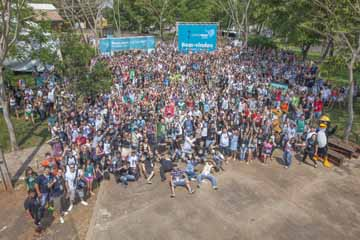

	<div class="content">
		<div class="container">
			<div class="about">
				<div class="about-grids">
					<div class="col-md-4 about-grid">
						<h3><a href="http://latinoware.org" target="_blank">Latinoware</a></h3><div class="clearfix"> </div>
						</a>
						<p>Um dos mais importantes eventos do setor na América Latina, a Conferência Latino-americana de Software Livre acontece anualmente na cidade de Foz do Iguaçu nas dependências da maior úsina hidroelétrica do mundo: <a href="https://www.itaipu.gov.br" target="_blank">Itaipu Binacional</a> construída em 1982 sendo um exemplo de geração de energia elétrica sustentável.</p>
					</div>
					<div class="col-md-4 about-grid center-grid1">
						<div class="clearfix"> </div>
						<p style="margin-top: 3.5em;">Estudantes, professores, pesquisadores e especialistas comparecem ao evento em busca de ampliar seus conhecimentos sobre as ferramentas livres de desenvolvimento e tambem compartilhar suas experiências e aumentando seu circulo profissional e pessoal.</p>
						<p>Com uma proposta cada vez mais abrangente, a Latinoware se destaca por reunir um amplo conteúdo de informações onde projetos inovadores em código aberto, boas idéias e ferramentas facilitam cada vez mais nosso dia a dia.</p>
						<p>Além da apresentação das novidades do setor, a conferência promove também a integração cultural, econômica e tecnológica da América Latina, visando ampliar os debates relacionados ao acesso às tecnologias atuais e de código aberto.
					</div>
					<div class="col-md-4 about-grid last-grid">
						<div class="clearfix"></div>
						<p style="margin-top: 3em;">Tendo missão de articulação e o fomento de ações voltadas ao desenvolvimento econômico, científico e tecnológico. E nós, como usuários e multiplicadores, apoiando o desenvolvimento de ferramentas que facilitem as atividades corporativas e individuais e as iniciativas para a disseminação do software livre.</p>
						<p>Contribuindo para o desenvolvimento sustentável dos países latino-americanos, além da geração de emprego, oportunidades de negócios e da facilitação da inclusão digital para a multiplicação do conhecimento.</p>
						<a href="http://latinoware.org" target="_blank"></a>
					</div>
					<div class="clearfix"> </div>
				</div>
			</div>
		</div>
	</div>